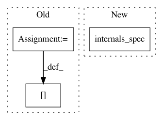

89ef2b21c7ea77929819dec7ba589c13c49bd702,tensorforce/core/models/distribution_model.py,DistributionModel,__init__,#DistributionModel#Any#Any#Any#Any#Any#Any#Any#Any#Any#Any#Any#Any#Any#Any#Any#Any#Any#Any#Any#Any#Any#,30
Before Change
// Network
inputs_spec = OrderedDict()
for name, spec in self.states_spec.items():
inputs_spec[name] = dict(spec)
inputs_spec[name]["batched"] = True
self.network = self.add_module(
name="network", module=network, modules=network_modules, inputs_spec=inputs_spec
)
After Change
if first_arg is None:
internals = network_cls.internals_spec(**kwargs)
else:
internals = network_cls.internals_spec(first_arg, **kwargs)
super().__init__(
// Model
states=states, internals=internals, actions=actions, scope=scope, device=device,
In pattern: SUPERPATTERN
Frequency: 3
Non-data size: 3
Instances
Project Name: reinforceio/tensorforce
Commit Name: 89ef2b21c7ea77929819dec7ba589c13c49bd702
Time: 2019-01-26
Author: alexkuhnle@t-online.de
File Name: tensorforce/core/models/distribution_model.py
Class Name: DistributionModel
Method Name: __init__
Project Name: reinforceio/tensorforce
Commit Name: 8b61a18641fdaa14601d0ed2e3337c8ee7b65f7c
Time: 2020-03-22
Author: alexkuhnle@t-online.de
File Name: tensorforce/core/networks/network.py
Class Name: LayerbasedNetwork
Method Name: internals_spec
Project Name: reinforceio/tensorforce
Commit Name: 9000ad931722064fb2efe38649389a5154538ce4
Time: 2019-02-13
Author: alexkuhnle@t-online.de
File Name: tensorforce/core/networks/auto.py
Class Name: AutoNetwork
Method Name: tf_apply